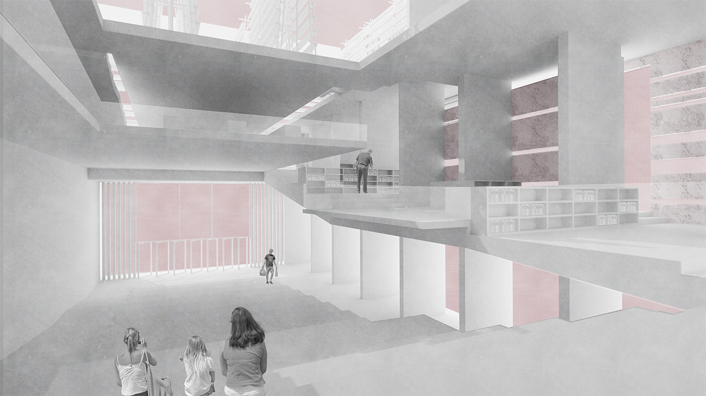

Good Food is a multi-use center located in the Hayes Valley, San Francisco. It draws on a journey map applied to user’s interactions with the building to organize the diverse program: vertical farms, a food-oriented library, community kitchen, and general use hall, acting as a food-centric community center both for production as well as education regarding food.
Occupants are forced to meander through the library or browse through market stalls, while only being able to observe the labs and farms. The journey map becomes a promenade that curates experiences regarding the rhythm of movement through each particular program and how that portion of the path relates to the building as an aggregate of experiences.

Gradually stepped promenade wraps around the atrium and takes user through the program while vertical stair case offers only a glimpse of the happenings
One staircase ascends into the matrix of vertical farms, this staircase rises above them.Farms are terraced to optimize access to sunlight.